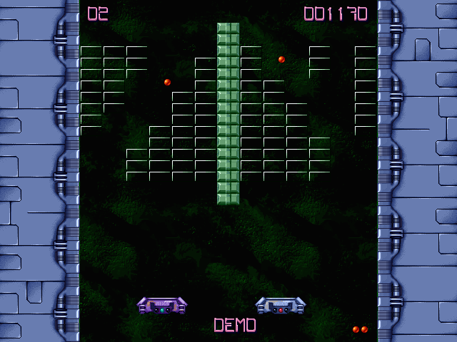
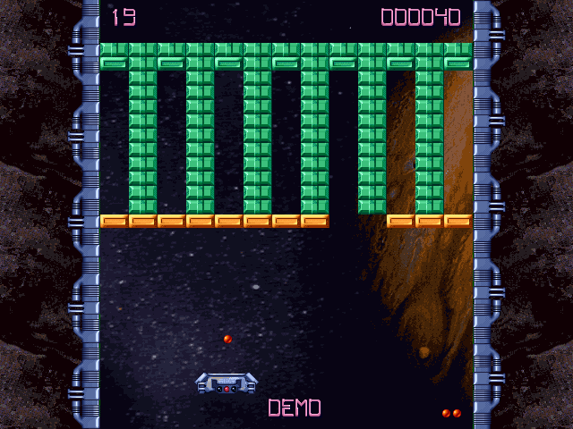
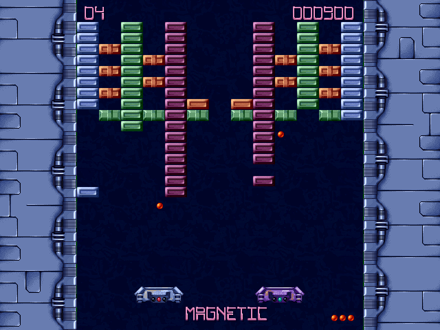
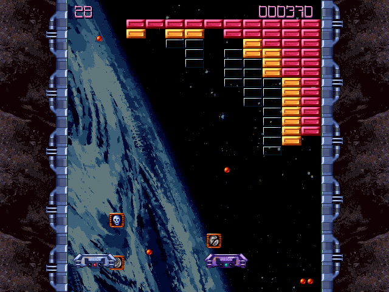

Le jeu
- 80 niveaux sur deux mondes, l'Espace et l'Arcade
- 24 bonus : multi-balle, balle de fer, laser, raquette magnétique, fantôme, téléporteurs…
- Des monstres qui surgissent : à esquiver ou à détruire
- À deux, en coopération ou en duel, sur un clavier ou deux manettes
- L'éditeur de niveaux d'origine, et le mode démo avec sa raquette automatique
- En français, anglais, allemand, espagnol, italien et portugais




L'édition de 1999
Brick Blaster sort le 5 octobre 1999 en CD-ROM, dans la collection à petit prix de Média Pocket, développé par Carapace (Softplace) et programmé par l'équipe de démomakers Eclipse. En 2024, son auteur Marc Radermacher confie les sources assembleur à david4599, qui les publie pour les préserver.
Ce portage en C et raylib reprend ces sources fonction par fonction : physique, bonus, niveaux et fichiers de scores sont identiques à l'octet près à ceux du jeu de 1999.
Visiteurs
Un par navigateur, depuis l'ouverture du site.